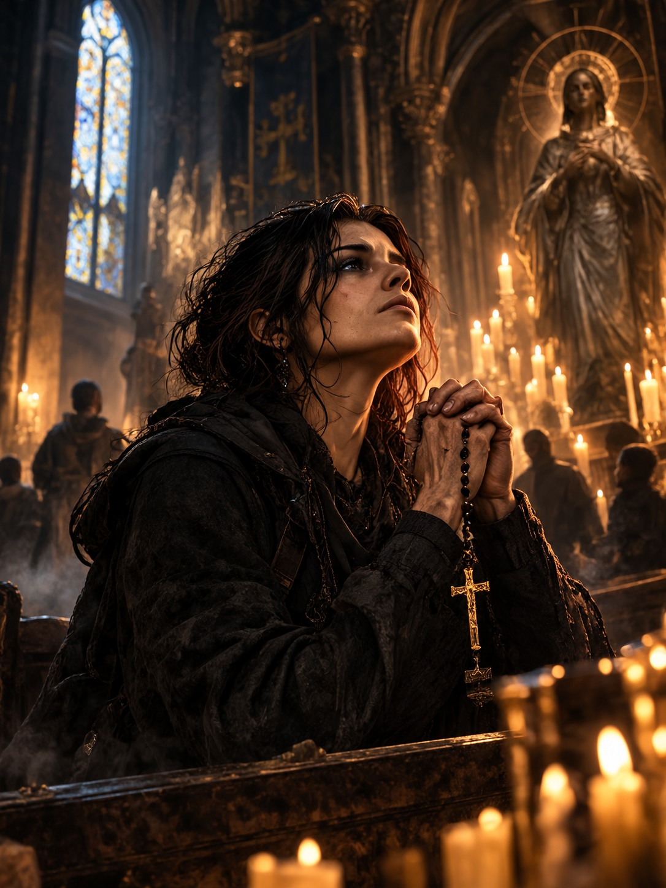
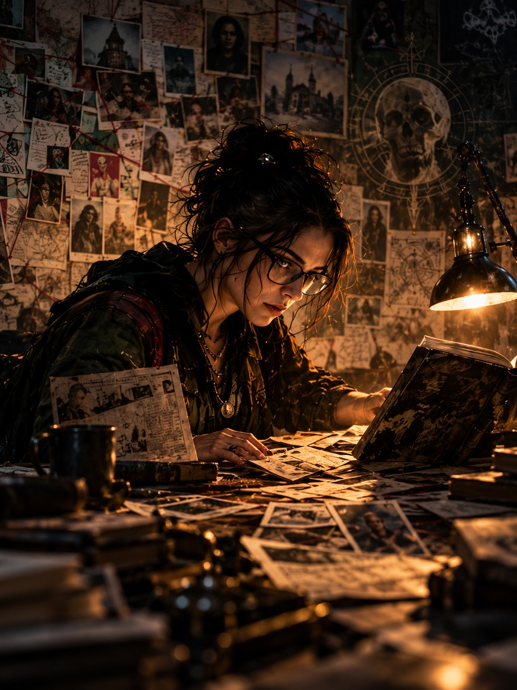
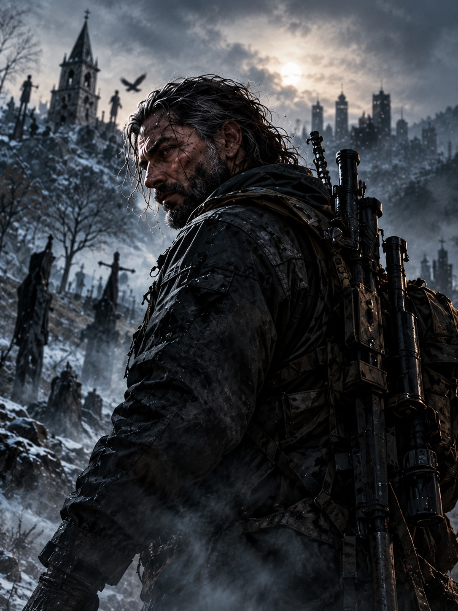
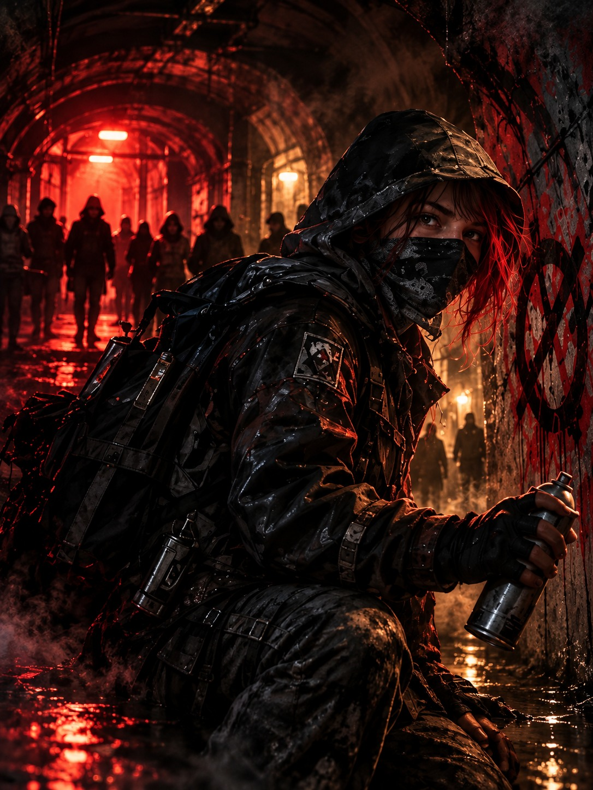

Entrepreneurial
Build the tool the problem needs.
Entrepreneurial hunters treat the Hunt as a problem to be engineered. Where others inherit their methods, they prototype them: a modified drone, an improvised ultraviolet array, a shell company that quietly buys the building where something sleeps. They speak the language of start-ups and side hustles and are as likely to raise money as to raise a shotgun.
They hold that the old ways failed because they stopped evolving, and that every encounter is data for the next design. Critics call them reckless tinkerers. They reply that the thing in the basement has not read the manual either.
Desperation
Building, inventing, improving or repairing something in the service of the Hunt.
Found among
Engineers and mechanics, programmers, fixers and small-business owners, promoters who can get anything by Friday.

Faithful
Belief is armour, and the monster knows it.
The Faithful meet the unnatural with conviction. For many it is religious: a priest who read the old rites and found that they work, a lapsed Catholic brought back to the pews by what she saw, a congregation that keeps holy water in the trunk. For others it is a secular certainty just as absolute: that evil is real, that it can be opposed, and that someone must stand in its way.
Their tools are often the oldest ones, prayer, sacrament, iron and salt, and more modern hunters are quick to dismiss them until they see a Faithful hunter hold ground no one else could. Their strength is also their danger. Certainty does not bend, and not every monster is the one they came looking for.
Desperation
Direct confrontation with the supernatural itself, whether by force or by will.
Found among
Clergy and lay ministers, converts who survived something, chaplains and hospice workers, apostates who lost their church but not their faith.

Inquisitive
Know it first. Then end it.
The Inquisitive hold that a monster understood is a monster half beaten. They read case files, folklore, autopsy reports and property records with equal care, and will sit through a week of surveillance to learn a single habit. Their tools run from the ancient to the cutting edge: a medieval bestiary in one hand, a phone full of intercepted messages in the other.
They are the cell’s memory and often its conscience, because they are the ones who ask what the creature was before it became one. Their weakness is the temptation to keep looking when the time has come to act.
Desperation
Gathering information on the Hunt: research, interrogation and surveillance.
Found among
Detectives and journalists, lawyers and insurance investigators, academics, archivists and hackers.

Martial
Some problems end with a single decisive act.
Martial hunters believe the simplest answer is usually the right one: find the thing and put it down so that it stays down. They train, maintain their weapons and plan an assault the way soldiers do, with exits and contingencies. Many come from the military, the police or the ring; plenty learned on the street.
What they share is the conviction that hesitation gets people killed and that no amount of theory replaces a well-placed shot. The other Creeds sometimes find them blunt. Few complain when the door comes down.
Desperation
Physical conflict on the Hunt.
Found among
Veterans, police officers and security contractors, fighters and athletes, and hunters in the older sense of the word.

Underground
Never fight fair if you can help it.
Underground hunters go where others will not and make the deals others refuse. They work through fences, informants, smugglers and old debts, and consider no resource beneath them. They move quietly, keep their names out of the files, and strike only once the odds are stacked as far in their favour as they can push them.
To the other Creeds they can look much like the criminals they walk among, and sometimes they are. Their answer is that the monsters live in the shadows, and someone has to know the way in.
Desperation
Stealth and subterfuge in the service of the Hunt.
Found among
Smugglers and fences, dealers, undercover officers and informants, enforcers who changed sides, art dealers with unusual clients.